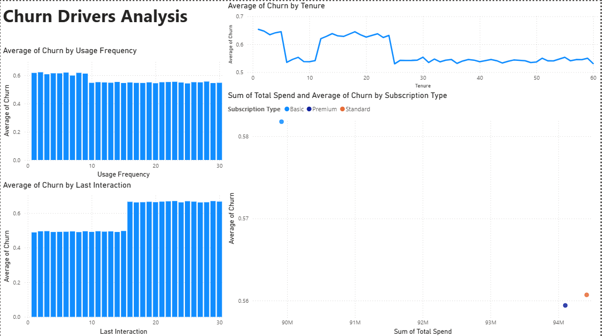
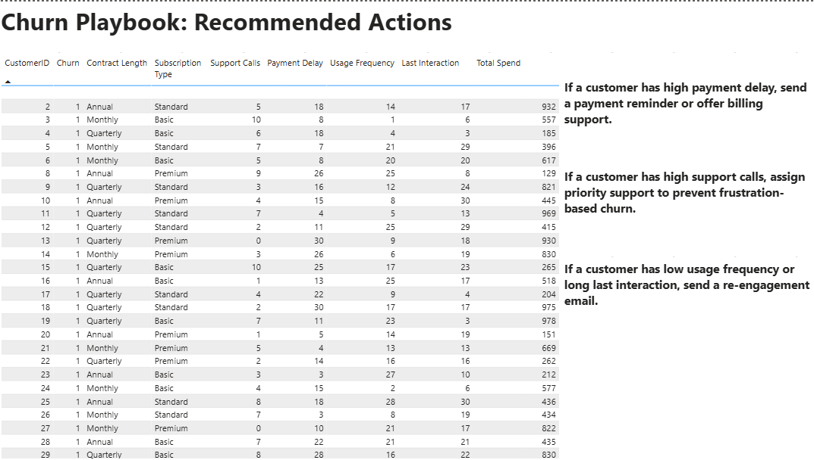

56%
Overall churn rate found in the dataset
3
Dashboard pages for overview, drivers, and actions
5+
Churn signals analyzed across customer behavior
Playbook
Retention actions mapped to risk signals
Dashboard Preview
Three focused Power BI pages show the churn story from business summary to customer-level action.
Churn Overview Executive view
Churn Drivers Behavior analysis

Churn Playbook Action plan

Key Insights
- Monthly contract customers show higher churn risk than longer contract customers.
- Support calls and payment delays can act as early warning signals for churn.
- Low usage frequency and long gaps since last interaction indicate re-engagement opportunities.
Recommended Actions
- Send payment reminders to customers with high payment delay.
- Assign priority support to customers with repeated support calls.
- Trigger re-engagement emails for low-usage or inactive customers.
Churn Playbook
Each action is tied to a customer signal, so the project moves beyond reporting into retention strategy.
Payment delay
Send a reminder and offer billing support before the customer churns.
High support calls
Route the customer to priority support to reduce frustration.
Low usage
Trigger a re-engagement email and highlight key product value.